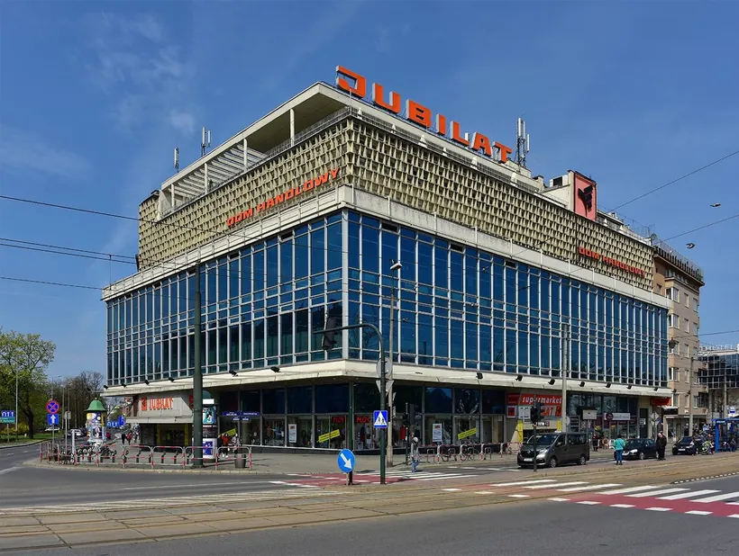

Eleganza
EleganzaHistoria Jubilata - od spółdzielni spożywców do domu handlowego nad Wisłą
Od spółdzielczości spożywców działającej w Krakowie od 1908 roku do modernistycznego domu handlowego nad Wisłą.

Historia Domu Handlowego Jubilat sięga 1958 roku, kiedy krakowska spółdzielczość spożywców obchodziła jubileusz pięćdziesięciolecia. Wtedy narodziła się koncepcja nowoczesnego centrum handlowego, symbolu rozwoju spółdzielczości i odpowiedzi na potrzeby mieszkańców Krakowa. Rok później powstała pierwsza koncepcja architektoniczna: największy obiekt handlowy w mieście, z kawiarnią na dachu i widokiem na Wisłę.
Wstępny projekt przygotował Henryk Jerzy Marconi, ale inwestycja się opóźniła. Zmieniono zespół projektowy, a ostateczną wersję budynku opracowano pod kierunkiem Jadwigi Sanickiej, z zachowaniem głównych założeń pierwotnej koncepcji. Stabilizacja podmokłego gruntu przy brzegu Wisły sprawiła, że budowa trwała blisko dekadę. Jubilat otwarto w lipcu 1969 roku i stał się największym, najnowocześniejszym domem towarowym w Krakowie.
Budynek to modernistyczna plomba w kwartale międzywojennych kamienic u zbiegu ul. Zwierzynieckiej i al. Krasińskiego, tuż przy moście Dębnickim. Dwie przeszklone kondygnacje parteru otwierają wnętrze na ulicę. Dwa piętra handlowe wysunięto przed lico budynku i ujęto w szklaną ścianę kurtynową. Wyższe kondygnacje biurowe mają spokojniejszy rytm elewacji z dekoracyjnym rastrem, a na najwyższym piętrze jest bar i taras z widokiem na Wisłę i Wawel, częściowo osłonięty ażurowym okapem. Wieczorami przeszklona fasada rozświetlała się rzędami świetlówek.
Przez niemal trzy dekady Jubilat był największym domem handlowym w Krakowie. W 1991 roku spółdzielnia przyjęła nazwę Handlowa Spółdzielnia Jubilat. W 2014 roku wymieniono stolarkę i przeszklenia: szyby o delikatnie niebieskim odcieniu zastąpiły pierwotne, brązowe. Dziś Jubilat pozostaje jednym z najbardziej rozpoznawalnych modernistycznych budynków Krakowa i ważnym miejscem zakupów w centrum miasta.
- 1908
Na krakowskim rynku działa spółdzielczość spożywców „Społem”, z której wywodzi się Jubilat.
- 1958
Na 50-lecie spółdzielni rodzi się pomysł nowoczesnego centrum handlowego dla Krakowa.
- 1959
Pierwsza koncepcja architektoniczna z kawiarnią na dachu i widokiem na Wisłę. Wstępny projekt przygotował Henryk Jerzy Marconi.
- 1969
W lipcu otwarcie Domu Handlowego „Jubilat” według projektu zespołu pod kierunkiem Jadwigi Sanickiej. Budowa na podmokłym gruncie przy Wiśle trwała blisko dekadę.
- 1991
Spółdzielnia przyjmuje nazwę Handlowa Spółdzielnia Jubilat.
- 2014
Modernizacja stolarki: szyby o delikatnie niebieskim odcieniu zastępują pierwotne, brązowe.